How we reconstructed Alvar Aalto’s Benedictine hilltop masterpiece in Oregon from low-resolution archival drawings and interior photographs—recovering his polycentric compass origins, irregular rotated H-columns, parapet-mounted reading lamps, watertight 2-manifold IngeTrazo solids, GPU stencil poché sections, and true 45.07° N solar physics.
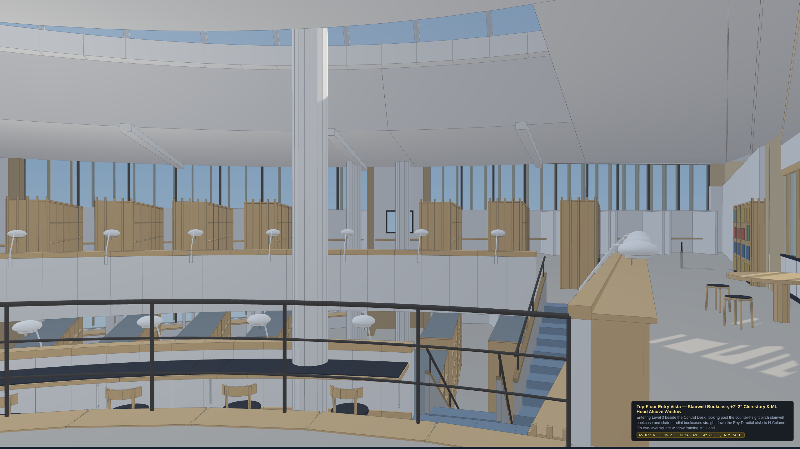
Open Camera in Live 3D ↗
The available archival scans were only ~1145×700 px—handwritten fraction callouts were barely four pixels tall. Early blockout attempts drifted wherever plans met radial walls. Instead of guessing pixel coordinates, we adapted our College Geometry ink-to-vector workflow: encode Aalto’s exact analytical compass-and-ray rules in Python first, then project SVG vectors back onto seven sheets simultaneously until every column, pocket, and stair locked to sub-pixel accuracy.
a3–a7), wall sections (a11–a22), stack layouts (f1–f2), structural framing (s4, s14), and interior photos.AaltoGeometry DatumWP #4 (0, 0) on Survey Grid Line (6), with polycentric offsets for structural rays and drum arcs.scale_px_per_ft, rot_deg, origin_px) overlay live analytical vectors onto raster scans for visual verification.aalto_bookcases.py and south_wing_interiors.py) extrude closed solids with Eberly hole-bridging ear-clipping (.igz, .obj, and live MCP TCP push).4096² Poisson PCF shadows, and a 3D Heliodon dome.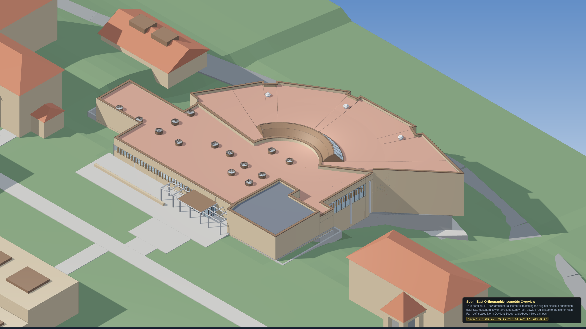
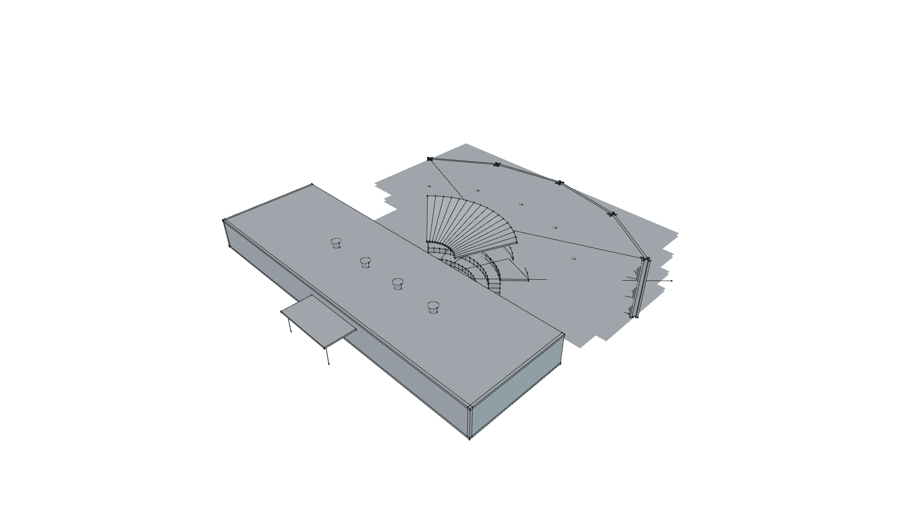
Every 2D SVG overlay line and every 3D WebGL2 triangle flows from a single parametric module: phiarchitect.mountangel.vectors. Not a single vertex was hand-sculpted in a GUI mesh editor.
Whenever an architectural question arose—how the perimeter H-columns rotate, how high the Level 3 back wall rises before the clerestory begins, or how the Mezzanine stairwell bookcases replace an open guardrail—we cropped 2× Lanczos detail regions from multiple sheets, updated the constructive rule once, and regenerated both the 2D blueprint proofs and 3D watertight solids together.
A crucial breakthrough came on Sheet 6 (Basic Plan Layout, 1/8″ = 1′-0″): Aalto’s fan is polycentric. The Reading Well arcs, structural column rays, outer fan walls, Control Desk drum, and North Daylight Scoop each sweep from subtly shifted compass centers so space expands asymmetrically toward the East Periodical Lounge and Mount Hood.
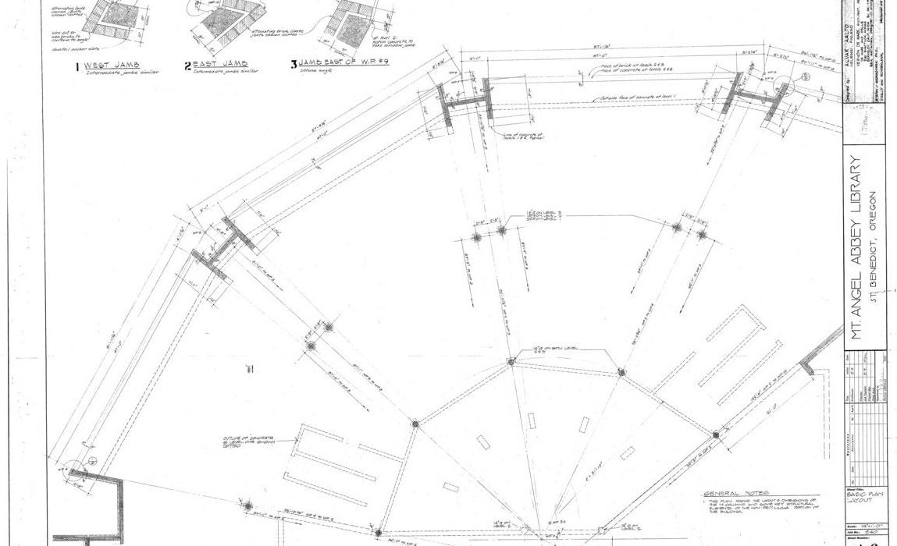
1. WP #4 (0.00′, 0.00′) & WP #3A (+1.45′, +2.65′) — Master survey datum on Grid Line (6) and focus of the double-height Reading Well (R = 22.80′ .. 43.80′, 41.8°..161.5°) and 15 radial bookstack aisles.
2. WP #3 (+2.60′, −1.80′) — Structural ray focus projecting Axis B (137.35°), Axis C (101.00°), and Axis D (65.72°) straight between the 6 paired twin 18″Ø columns (2′-8″ + 2′-8″ = 5′-4″ c/c) and into the 3 perimeter H-columns.
3. WP_LOWER (+5.20′, −4.80′) — Outer flank origin generating boundary walls Axis A (168.0°) and Axis E (38.6°).
4. WP_DESK (−1.20′, +2.20′) & WP_SCOOP (0.00′, +2.80′) — Eccentric centers for the Circulation Control Desk / perforated birch ceiling drum and the crescent North Daylight Scoop.
Before any geometry could be traced, each scanned sheet had to be put to scale. Using the printed dimensions and survey grid lines, every plan was fitted with a shared foot grid centred on WP #4 (0, 0): red lines every 20′ in X, blue lines every 10′ in Y. Room corners, columns and walls could then be read straight off the drawings in real feet. Sections were read with a pixel ruler to pick off floor, ceiling and roof heights. Click any sheet to enlarge it.
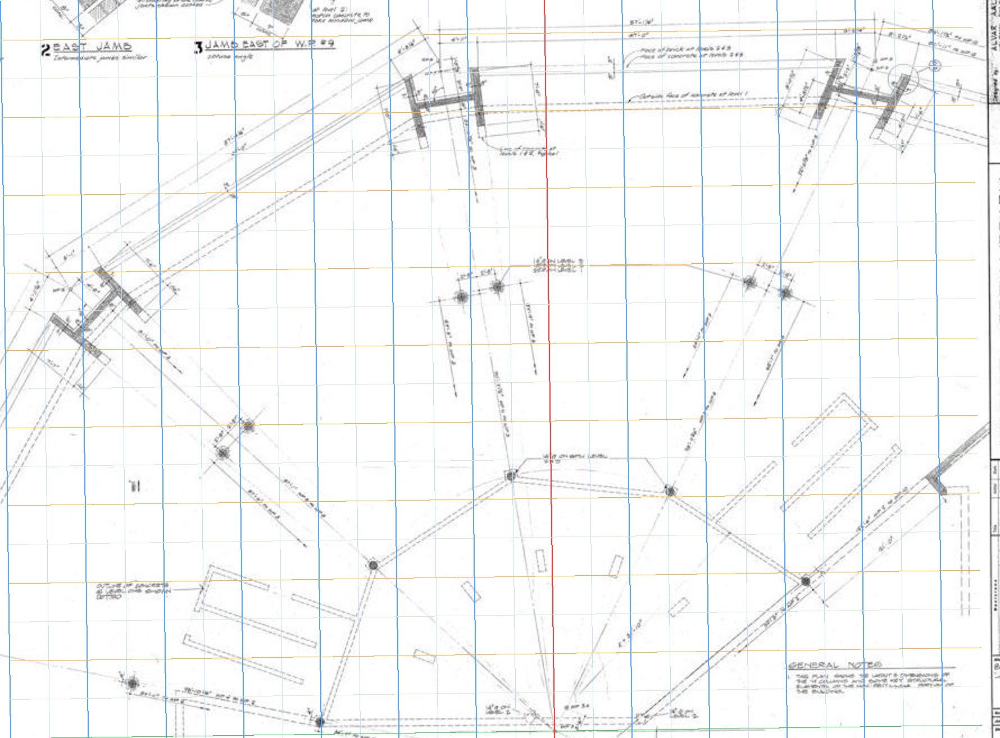
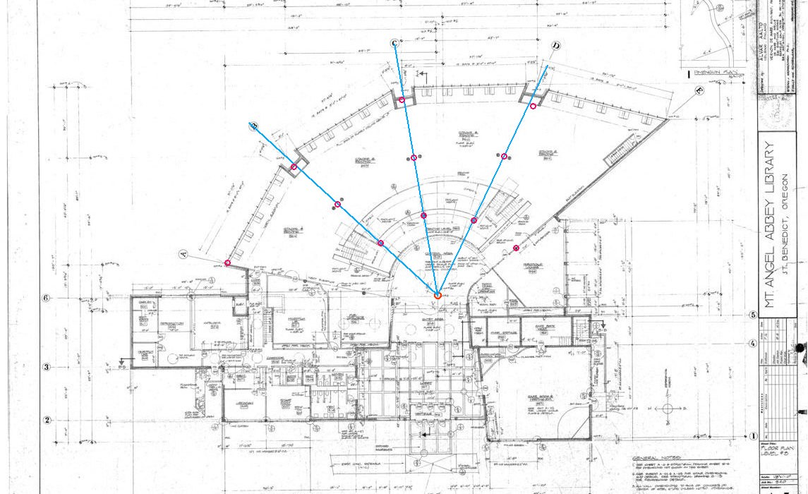
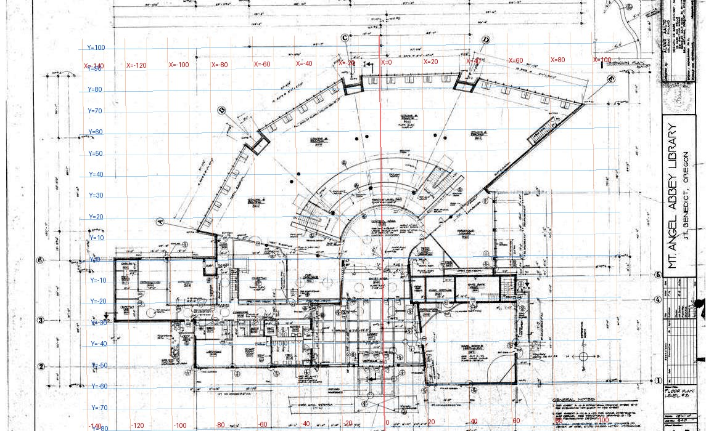
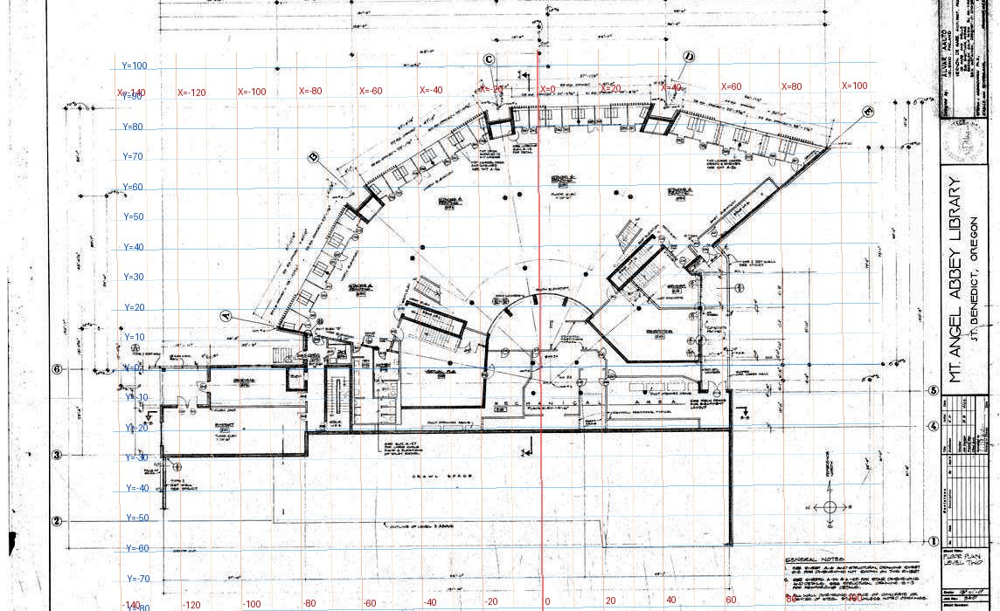
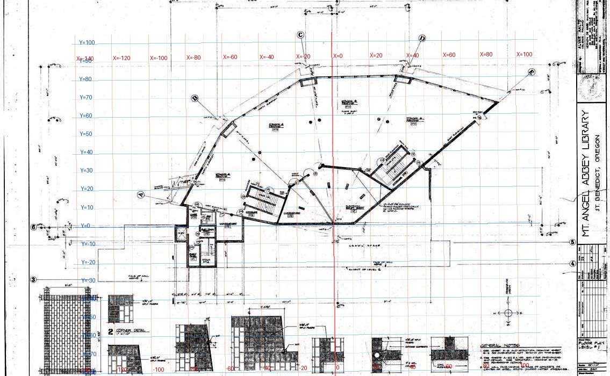
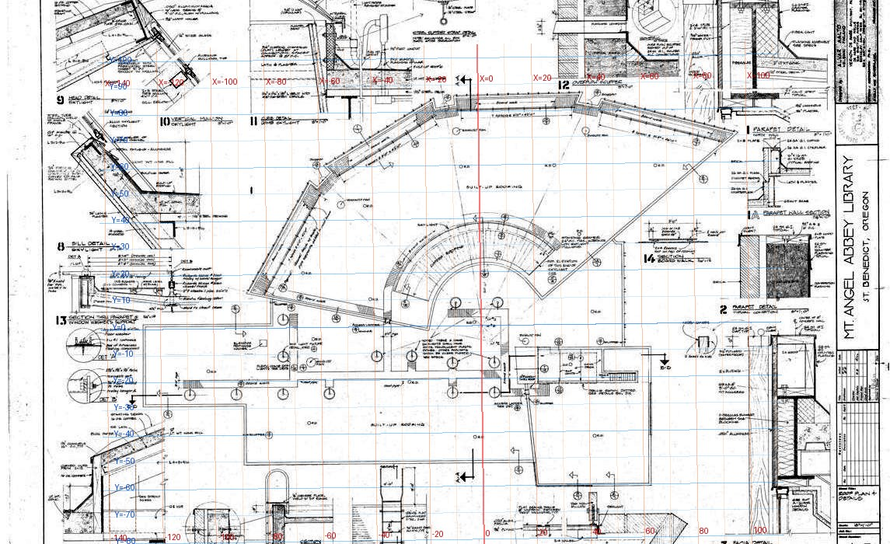
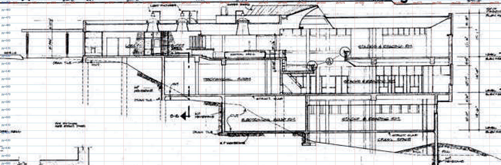
At low resolution, the three North perimeter piers look like identical H-shapes. High-zoom inspection of Sheet 06-a6, 11-a11, 12-a12, and structural detail 45-s14 revealed two extraordinary architectural truths: first, the H-columns are rotated 90° so their pockets open outward (housing copper roof-scupper leaders) and inward (forming cozy built-in birch reading alcoves); second, every single H-column is geometrically distinct where the faceted curtain wall bends.

Outside the crossbar on Levels 2–Roof, each H-leg narrows to a 9.4″ buff-brick fin mitered flush to the curtain-wall bays; inside, it steps wider to a 12.2″ structural column leg. Below the cantilevered Level 2 soffit, the outer fins terminate and Level 1 steps back to an exposed-concrete U-channel extending +1′-6″ deeper indoors.
Verified across three sheets (05-a5, 11-a11, 12-a12), only H-COL D (Ray D = 65.72° ENE) is pierced by an eye-level square window (3′-8″ × 3′-7″, sill +3′-5″), with its exterior rainwater scupper tucked into the corner (u = 0.12). Stepping onto Level 3 beside the Control Desk aligns your eye straight down the 56.4°..71.9° radial stack aisle through this window to Mount Hood.

+7′-2″ Clerestory Back Wall
Per Section 1 (17-a17) and Detail 9 (11-a11), the North perimeter wall on Level 3 is solid up to +7′-2″ (+2.18 m)—golden Mount Angel buff brick outside and smooth white plaster inside behind the 20 study carrels—crowned by high clerestory glazing (+2.18..+4.52 m) and full-height hemlock sun louvers.
To support real-time GPU stencil sectioning and shadow casting without light leaks or streak artifacts, every single wall, perforated skylight roof slab, sloped stair-cheek parapet, Aalto stool, and mushroom reading lamp is constructed as a closed 2-manifold solid (unpaired_edges = 0 across all 8 layers).
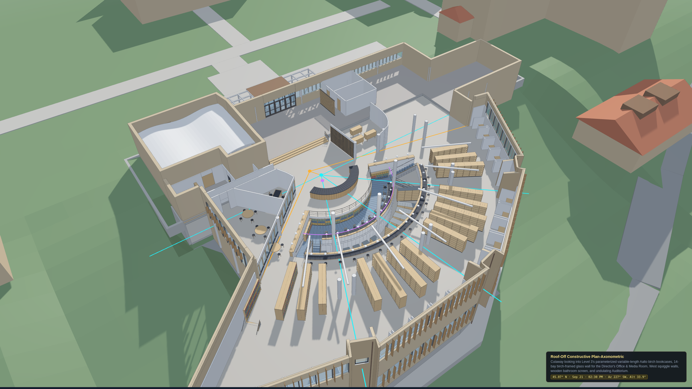
Inspect in 3D Viewer ↗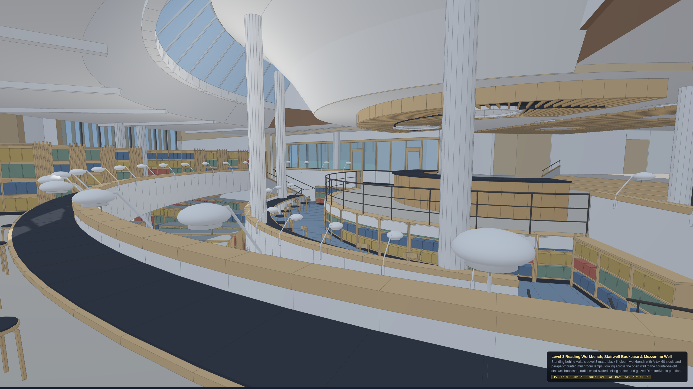
Along both radial Mezzanine stairs (41.8° East & 161.5° West), Aalto omitted open metal guardrails in favor of counter-height (+0.94 m / 3′-1″) 6-bay, 3-shelf birch bookcases facing Level 3, backed by smooth stairwell plaster, sloped stair-cheek walls, wall-bracketed bronze handrails, and 4 radial mushroom lamps per stair.

−4′-6″ Mezzanine Workstations & Aalto Seating
Mirroring Level 3’s outer arc (which pairs cantilevered matte-black linoleum counters with 16 backless 4-legged Artek 60 stools), the −4′-6″ Mezzanine features slate-blue wool carpet, cantilevered black linoleum workbenches on white steel T-brackets, 11 Artek 69 backrest chairs, curved & radial 4-shelf Reference Bookwalls, and slate-grey-topped Level 2 stacks below.
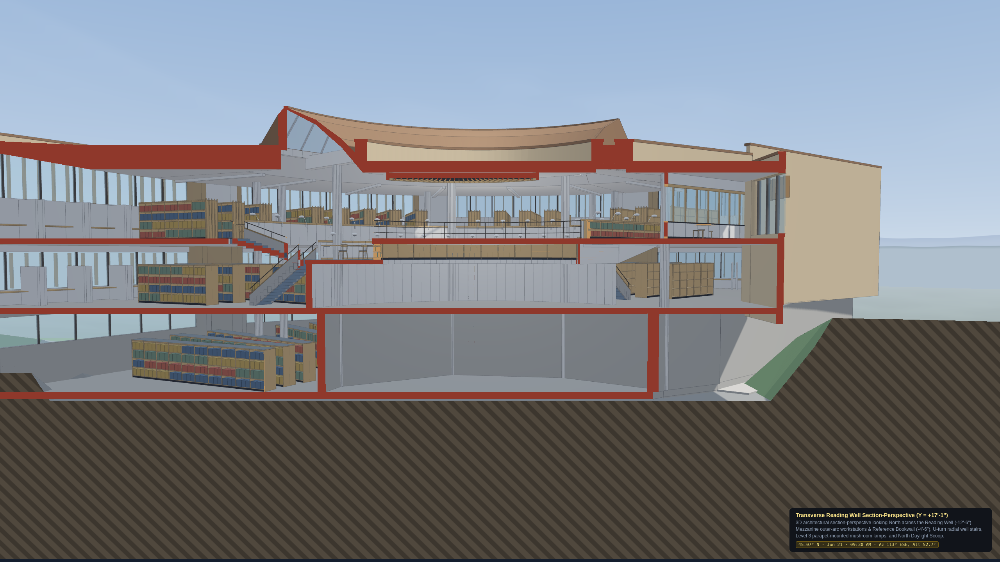
Archival photos revealed that Aalto’s reading fixtures are not table lamps sitting on the linoleum surface: a white-enameled steel channel clamps onto the well-facing plaster parapet, sending a tubular arm up at 55° over the birch curb and bending horizontally into the shoulder of a spun-aluminum white mushroom dome with an anti-glare collar and brass pull-chain.
Because every solid in library_3d_scene.json is strictly closed and consistently CCW-wound, a fragment-shader half-space plane dot(vPos, uClipPlane.xyz) > uClipPlane.w can slice dynamically along X, Y, Z, or radially around WP #3 while two-sided stencil counting fills solid cut interiors at 60 FPS.
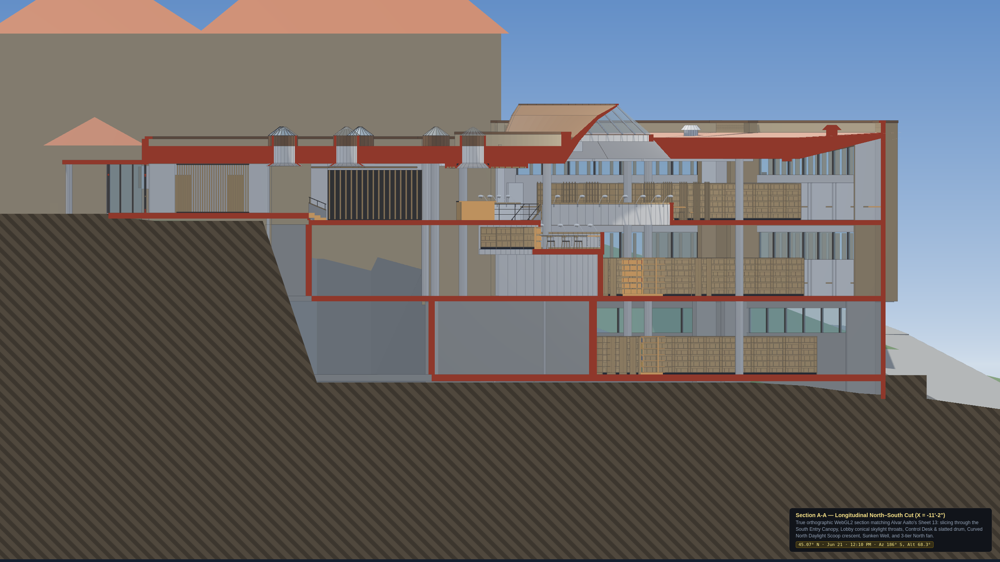
For each material category, a color-masked pass increments the 8-bit stencil buffer on clipped back-faces (INCR_WRAP) and decrements on clipped front-faces (DECR_WRAP). A depth-writing plane quad then seals every non-zero stencil pixel so interior wall cavities and background wireframe edges are cleanly occluded:
Punching 12 circular skylight shafts through the non-convex South Wing roof slab, 2 throats through the curved Control Desk ceiling drum, and the annular Reading Well through Level 3 uses David Eberly’s +X mutual-visibility bridge algorithm (add_extruded_polygon_with_holes_ft)—producing single-shell watertight slabs with zero T-junctions.
Alvar Aalto designed Mount Angel Abbey Library around indirect northern sky light, baffled clerestories, and flaring conical skylightwells so monks and scholars could read without harsh shadows or UV book damage. Coupling an exact Mount Angel solar ephemeris with a 4096×4096 hardware shadow map lets us test his daylighting instruments across every hour and season.
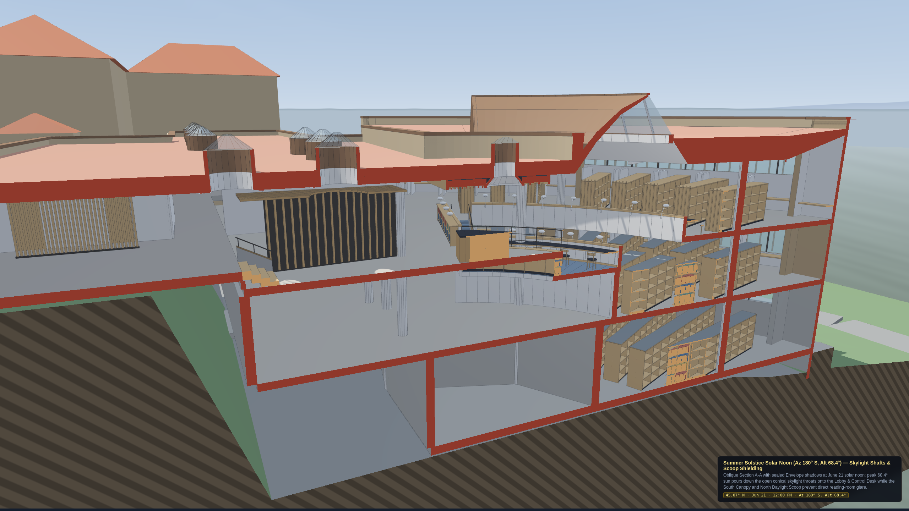
Envelope vs. CutawayStandard section viewers destroy interior daylight as soon as you clip a wall or hide the roof—flooding the room with fake exterior sun. We solved this with two selectable shadow-pass modes:
• Sealed Envelope Mode renders all structural & roof layers unclipped into the DEPTH_COMPONENT24 shadow map even while the camera clips Section A-A, revealing authentic interior light shafts entering strictly through skylights, louvers, and the North Scoop.
• Cutaway Drafting Mode applies active layer visibility and uClipPlane inside FS_SHADOW so architectural plan-sections cast crisp oblique drafting-table shadows from cut masonry walls and H-columns.
Orbit freely, scrub section cuts in feet & inches, toggle structural and millwork layers, or animate the sun from dawn to dusk across the Willamette Valley bluff.